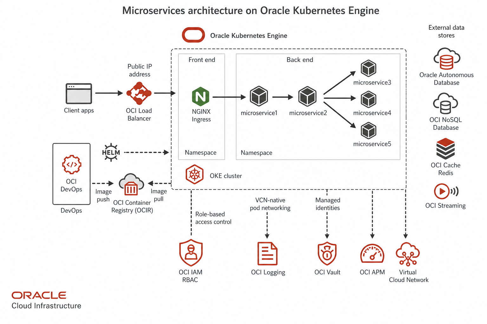

Microservices Architecture on Oracle Kubernetes Engine
Deploying microservices on OKE with OCI Load Balancer, OCIR, Autonomous Database, and OCI Vault for enterprise workloads.
As OCI matured, VF Interactive began delivering OKE-based platforms for clients with Oracle database estates and data residency requirements. The diagram above combines Kubernetes-native microservices with OCI managed services.
Traffic flow
Client traffic hits an OCI Load Balancer public IP, which forwards to an NGINX Ingress controller in the frontend namespace. Ingress rules distribute requests across backend microservices inside the OKE cluster.
Microservice layout
Backend namespaces host microservice1 through microservice5 with the same API-orchestration-data layering used on other clouds. OCI VCN-Native Pod Networking integrates pods directly into your virtual cloud network.
CI/CD and images
OCI DevOps pipelines build, test, and deploy services. Images push to Oracle Container Image Registry (OCIR). Helm charts promote releases across dev, staging, and production clusters.
Data and messaging
Persistence uses Autonomous Database for Oracle and compatible SQL workloads, OCI Cache with Redis for session and query caching, and OCI Streaming for event-driven integration between services.
Security and operations
OCI IAM controls cluster and API access. OCI Vault manages secrets and encryption keys. OCI Monitoring, Logging, and APM provide operational visibility across the stack.
Implementation Checklist
Deploy OKE on flexible shapes for cost efficiency. Configure OCI IAM policies for cluster and node pool management. Set up OCIR in the same region as the cluster. Use OCI Load Balancer for ingress with proper backend set health checks.
Production Hardening
Store secrets in OCI Vault and reference them from Kubernetes secrets via CSI drivers. Enable OCI Cloud Guard for security posture management. Use compartment isolation per environment. Monitor with OCI APM and Logging.
When to Choose OKE
OKE fits organizations with Oracle database estates, data residency requirements in specific regions, or commercial commitments to OCI. Kubernetes skills transfer directly. Managed services handle the control plane while OCI native services handle persistence and identity.
Networking Deep Dive
OKE VCN-native pod networking integrates pods into your virtual cloud network. Security lists and NSGs control traffic at the VCN level. Service Gateway provides private access to OCI services. FastConnect links on-premises data centers with predictable latency.
Observability Stack
OCI Monitoring tracks cluster and node health metrics. Logging ingests application logs with search and retention policies. APM traces requests across services and highlights slow database calls. Set alarms on API error rates and certificate expiry.
Common Pitfalls
Adopting tools before defining outcomes leads to expensive experiments without business value. Copying another organization's architecture without understanding your constraints creates fragile systems. Skipping documentation means every new team member relearns lessons the hard way.
Getting Started
Define success metrics before implementation. Start with the smallest scope that proves value. Review results with stakeholders weekly during the first month. Iterate based on evidence, not assumptions.